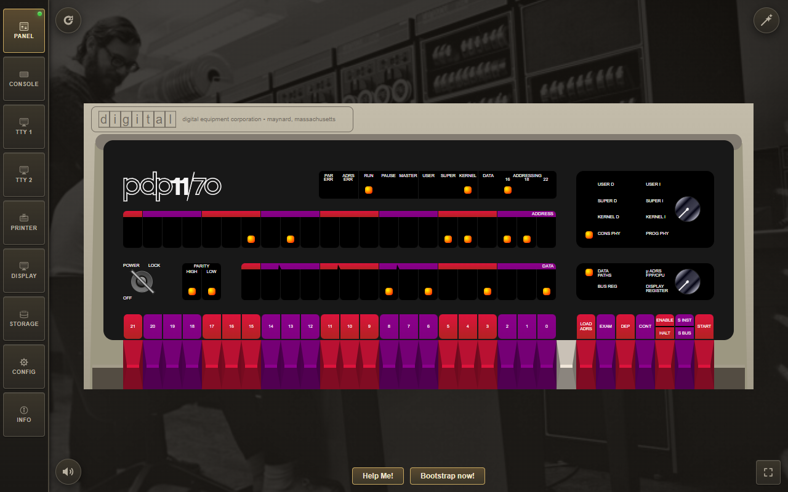
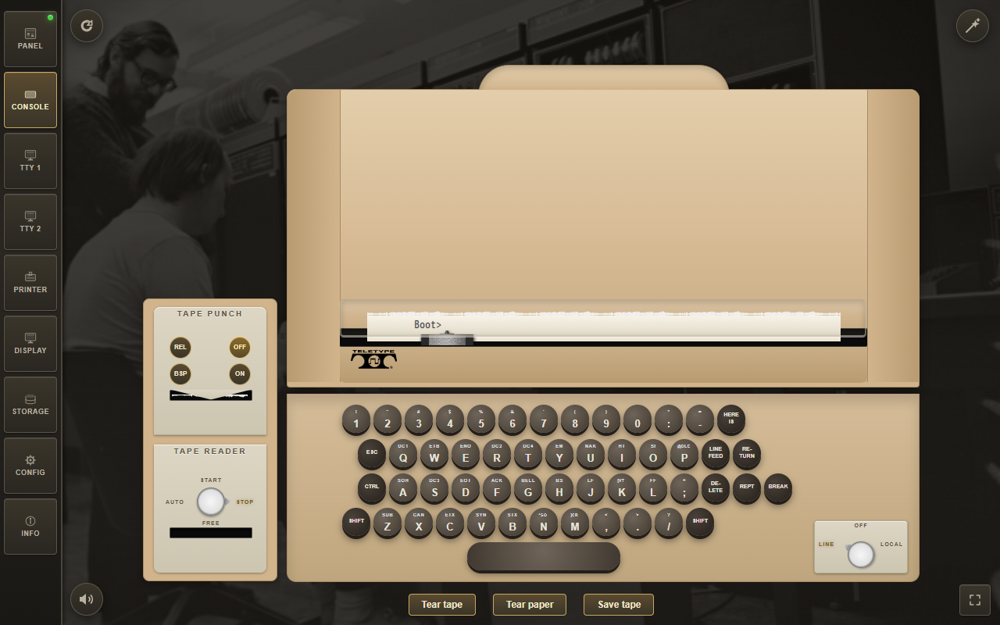
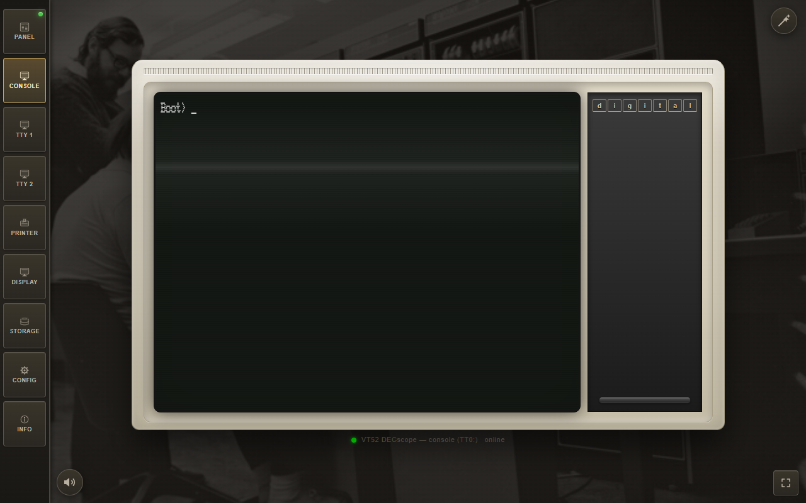
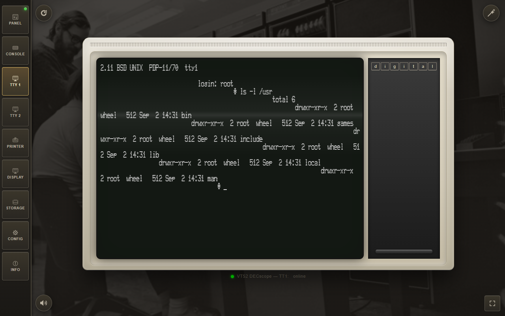
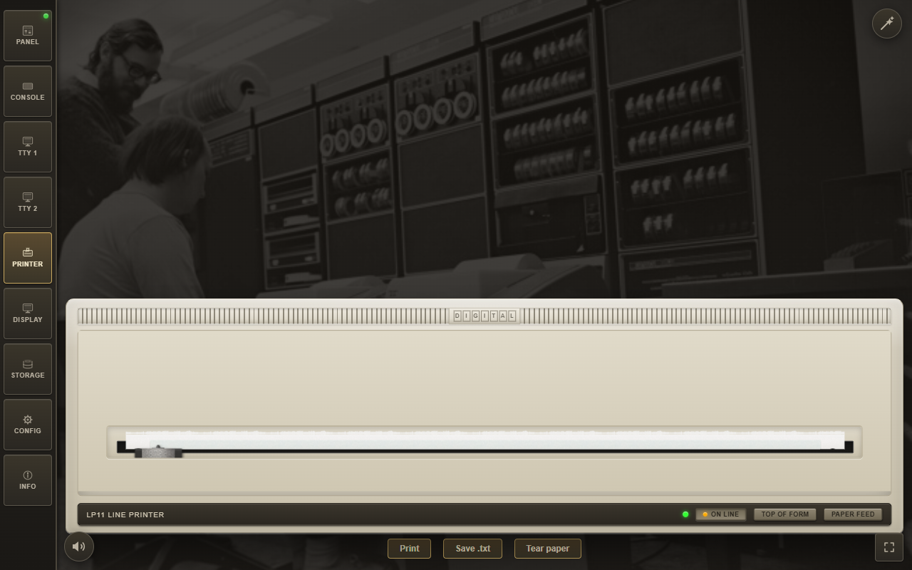
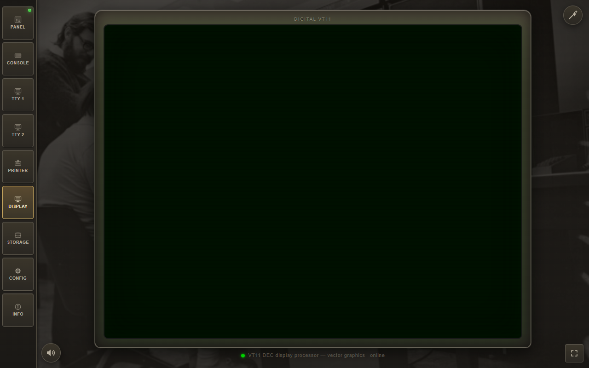
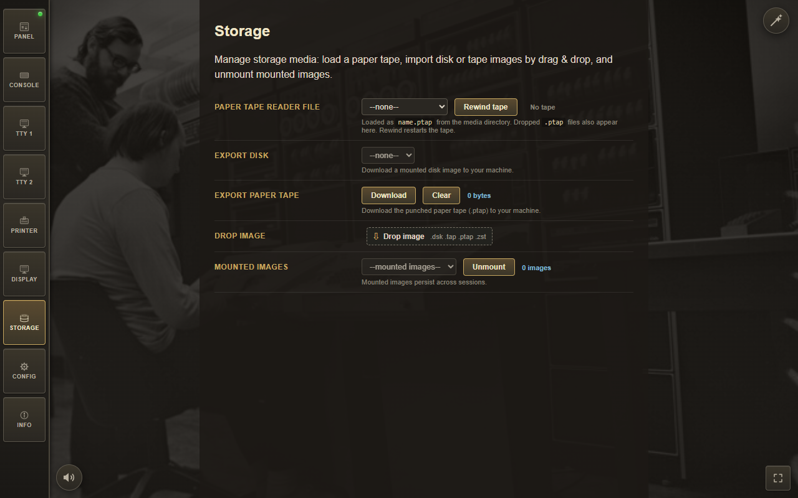
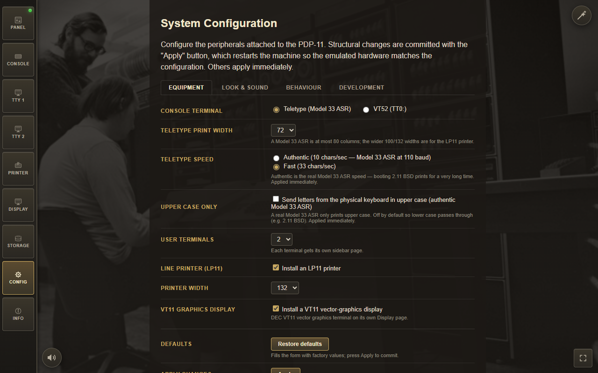

Welcome to the machine. This guide walks you through every page of the emulator — from the very first boot to the deepest configuration options — so you can spend your time in the machine room, not in the documentation.
Everything below applies to both the browser version and the Tauri desktop app.
In a hurry? Use the magic wand button in the top-right corner of the window. It stays on every page except Info. One click does everything:
boot command — and the login too, where the credentials are
known (e.g. Unix V5: boot rk0 → unix → login root).
The wizard is prompt-aware: it watches the console output and types the login only when the guest
actually prints login:, so slow boots with lots of output (e.g. 2.11 BSD) still reach the
prompt reliably. Each guest also declares the machine profile it wants — e.g. RT‑11/RSX/RSTS enable the
LP11 line printer, and Unix V5/BSD force a teletype console — so the wizard reconfigures the machine if
needed and resumes the boot automatically. Every wizard boot starts on a fresh page (clean paper and
clear screens), and a toast warns
"Autoloading in progress — don't touch the teletype/keyboard" while the sequence is being
typed.
Boot> prompt, type boot rp1 and press ENTER.root (no password).ls, ps -aux, df — or compile a C program with
cc.
Every switch, LED, and rotary knob of a real PDP‑11/70 is faithfully recreated. The Panel page is where you toggle in a bootstrap loader the way DEC engineers did in the 1970s.

The PDP‑11/70 front panel, powered on.
A simple light chaser — toggle this in to see the address and data LEDs dance:
Switch sequence: HALT, 001000, LOAD ADDRESS
012700, DEPOSIT
000001, DEPOSIT
006100, DEPOSIT
000005, DEPOSIT
000775, DEPOSIT
001000, LOAD ADDRESS, ENABLE, START
Restart the bootloader:
HALT, 120000, LOAD ADDRESS, ENABLE, START
The operator console is what the PDP‑11 uses as its TT0: — the machine's own typewriter.
Depending on the CONFIG page, it is either a Model 33 ASR teletype or a DECscope VT52.
The console is rendered as an authentic light-cream/beige Model 33 ASR: a paper roll behind the rising sheet, a glass carriage window, and a stamped Teletype Corporation logo on the lower face plate.

The Model 33 ASR operator console at the Boot> prompt.
a–z to A–Z only when the Upper Case
Only CONFIG option is enabled (off by default, so 2.11 BSD receives lower case).^H) rendering: re-printing the
same glyph gives bold, underscores give underline, and striking a different glyph leaves
the real dark overstrike blot a hard-copy terminal makes.When the console terminal is set to a VT52, the operator console becomes a DECscope with its authentic white/grey (P4) phosphor on a black tube — see User Terminals below for the full behaviour, which is shared.

A DECscope VT52 as the operator console, showing the Boot> prompt.
Up to two user VT52 terminals (shown only when configured on the CONFIG page) let guest OSes that prefer video terminals run side by side. Each is drawn as an authentic slanted DECscope monoblock: an off-white moulded-plastic cabinet with a vent grille, a recessed screen in a deep bezel, and a plain plastic side panel with a raised ridge. Input comes from the physical keyboard, as on the original DECscope.

A user VT52 terminal (TTY 1) running an interactive session.
fritzm/vt52 bitmap display font
(monospace is the fallback until the webfont loads).^L) both wipe the display and
home the cursor, so clear and multi-page nroff/man output start each page from the top
row.Ctrl+C/Ctrl+V/
right-click paste) for fast source-code entry — at the cost of the SGR emphasis rendering.
The LP11 is an animated line printer on wide 132-column paper (72/80/100/132 selectable). It has no
keyboard — it only prints. Use the Print button to send the accumulated jobs to the real OS
printer via the system dialog, or Save .txt to export the output (page breaks are kept as
\f markers).

The LP11 line printer printing a job listing.
?LP0: I/O error) instead of silently discarding the job.
lpr/
lpd) sends FF between jobs so each starts on a fresh page: it fills the rest of the
sheet (66 lines at 6 LPI) and closes it with a dashed fold/perforation marker.
An optional DEC VT11 vector-graphics display processor on its own green-phosphor CRT page (1024×768 logical resolution, auto-scaled to fit the window), enabled from the CONFIG page. Lunar Lander uses it — the quick-boot wizard enables the display and switches to the Display page automatically.

The VT11 vector-graphics CRT page.
The Storage page manages every kind of storage media:

The Storage page: paper-tape reader, drop zone and mounted images.
#ptr device. Load BASIC‑11, ODT‑11,
ED‑11, or Lunar Lander from simulated paper tape — then boot with boot pr..dsk,
.tap, .ptap and their .zst-compressed forms are supported.
Note: the paper-tape reader is driven by the console bytes — every byte echoed to the console punches a matching row of holes on the ASR paper tape.
The Config page controls the emulated peripherals and is persisted between sessions. The form is split into four tabs, with the Apply and Restore defaults actions in a bar below the tabs:

The Config page with its four tabs and Apply / Restore defaults bar.
| Tab | Controls |
|---|---|
| Equipment | Console terminal type (teletype or VT52), number of user terminals (0–2), LP11 line printer, VT11 graphics display, print widths (teletype 72/80, printer 72/80/100/132), teletype speed, and the Upper Case Only keyboard flag. |
| Look & sound | VT100-style key-click sound for VT52 terminals, historical VT52 reverse-video mode (black text on white), pure-CSS CRT simulation, ambient PDP‑11 power-supply hum and fan noise while the machine is on, and the PDP‑11 machine-room photo backdrop. |
| Behaviour | Reboot confirmation ("Don't show this warning anymore" can be restored here at any time). |
| Development | VT52 text mode (plain text field with native Windows Clipboard). |
Structural changes (console type, terminals, printer, VT11 display) are committed with Apply, which restarts the machine so the emulated hardware matches the configuration. Print widths, teletype speed, the Upper Case Only flag, key click, reverse video, CRT effects, VT52 text mode, machine hum and the photo backdrop apply immediately. Restore defaults fills the form with factory values (committed by Apply).
The hum is synthesized with Web Audio on its own audio channel, so it never cuts off the teletype/printer or the VT52 key-click sounds.
The emulator ships with ready-to-boot disk and tape images. Just type boot
at the Boot> prompt — or pick one with the magic wand.
| Disk | Operating System | How to Boot |
|---|---|---|
| RK0 | Unix V5 | boot rk0 → unix → login as root |
| RK1 | RT‑11 v4.0 | boot rk1 |
| RK2 | RSTS V06C‑03 | boot rk2 — login 11,70 password PDP |
| RK3 | XXDP (diagnostics) | boot rk3 |
| RK4 | RT‑11 3B Distribution | boot rk4 |
| TM0 | RSTS 4B‑17 (tape) | boot tm0 — follow ROLLIN restore procedure |
| RL0 | BSD 2.9 | boot rl0 → rl(0,0)rlunix → CTRL/D → login root
|
| RL1 | RSX‑11M v3.2 | boot rl1 — login 1,2 password SYSTEM |
| RL2 | RSTS/E v7.0 | boot rl2 — login 11,70 password PDP |
| RL3 | XXDP (extended) | boot rl3 |
| RP0 | ULTRIX‑11 V3.1 | boot rp0 → CTRL/D → login root |
| RP1 | BSD 2.11 | boot rp1 — autoboots to multiuser, login root |
| RP2 | RSTS/E v9.6 | boot rp2 — answer prompts, login 11,70 |
| RP3 | RSX‑11M v4.6 | boot rp3 — auto-logs 1,2 SYSTEM |
| RP4 | RSTS/E v10.1 | boot rp4 — answer prompts, login 11,70 |
Use the sidebar to switch between:
| Control | Where | What it does |
|---|---|---|
| Magic wand | Top-right corner (every page except Info) | Quick-boot picker — chooses a guest OS, reconfigures, reboots and types the boot/login. |
| REBOOT | Top-left corner, just right of the sidebar | Round button with a restart icon. Restarts the machine and boots the built-in default loader. By default a confirmation dialog asks first, with a "Don't show this warning anymore" option. |
| Mute | Bottom-left corner, just right of the sidebar | Round button that toggles all sounds at once — hum, teletype/LP11, paper feed/tear, key clicks and the bell. State is persisted with the rest of the configuration. |
| Fullscreen | Bottom-right corner of the window | Floating button that hides the browser/system chrome (address bar, OS window frame, taskbar) while leaving the emulator UI untouched. Press again or Esc to return. |
Each output sidebar button has a small blinking green LED in its top-right corner: it pulses while the PDP‑11 writes output to that console/terminal (and blinks for the whole print job on the Printer button), then switches off about half a second after the output stops.
If a guest OS image cannot be fetched completely — a big BSD image dropped by the hosting server mid-download, or an image that is not bundled in the Minimal desktop build — the emulator doesn't stall silently. A dialog in the same shared modal style as the first-run hint explains that the image is incomplete and offers Open Storage, which jumps straight to the drop zone for a manual drag & drop of the downloaded file.
The wording adapts to the environment: a page opened as a local file:// explains that the
browser blocks fetching the media directory (and suggests a local web server), while the Tauri Minimal
build explains that the image is not shipped and points to the drop zone.
Prefer a native app? The same emulator is packaged as an offline desktop application for Windows x64 with Tauri. Two installer variants are available:
| Variant | Ships | Notes |
|---|---|---|
| Minimal | rk0, rk1, bootcode | Small download (~3 MB). All other images are dragged & dropped at runtime. |
| Full | every image — RK/RL/RP/RA disks, TM tapes, all paper tapes | Larger download, but all 16 guest OSes boot offline with zero extra steps. |
Happy emulating!
— yaPDP User Manual
— Fork maintained with love for the DEC era